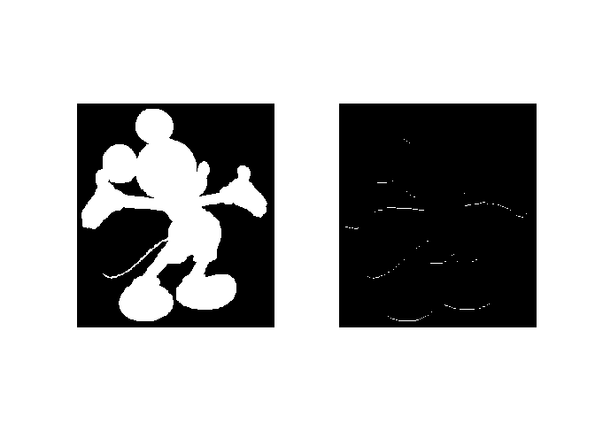
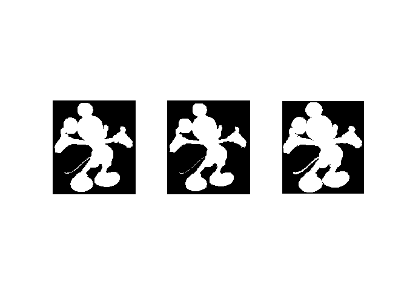

PW skeletonization - Solution
Contents
Cleaning and reading image
clear all; close all; clc;
A=imread('mickey.bmp');
Hit-or-miss transformation
T=[1,1,1;0,1,0;-1,-1,-1];
B=hitormiss(A,T);
figure;colormap gray;
subplot(121);imshow(A);
subplot(122);imshow(B);

Thinning and thickening
TT=cell(1,8);
TT{1}=[-1,-1,-1;0,1,0;1,1,1];
TT{2}=[0,-1,-1;1,1,-1;0,1,0];
TT{3}=[1,0,-1;1,1,-1;1,0,-1];
TT{4}=[0,1,0;1,1,-1;0,-1,-1];
TT{5}=[1,1,1;0,1,0;-1,-1,-1];
TT{6}=[0,1,0;-1,1,1;-1,-1,0];
TT{7}=[-1,0,1;-1,1,1;-1,0,1];
TT{8}=[-1,-1,0;-1,1,1;0,1,0];
B=thinning(A,TT);
B=thinning(B,TT);
C=1-thinning(1-A,TT);
C=1-thinning(1-C,TT);
figure;colormap gray;
subplot(131);imshow(A);
subplot(132);imshow(B);
subplot(133);imshow(C);

Topological skeleton
B2=A;
B=~B2;
while (isequal(B,B2)~=1)
B=B2;
B2=thinning(B,TT);
end
figure
subplot(121);imshow(A);colormap gray
subplot(122);imshow(B);colormap gray
Morphological skeleton
S=zeros(size(A));
r=0;
pred=true;
while pred
r=r+1;
E=imerode(A,strel('disk',r));
if sum(E(:))==0
pred=false;
end
S=max(S,E-imopen(E,strel('disk',1)));
end
figure
subplot(121);imshow(A);colormap gray
subplot(122);imshow(S);colormap gray
Useful functions
type 'hitormiss.m'
type 'thinning.m'
function B=hitormiss(A,T)
T1=(T == 1);
T2=(T == -1);
B=min(imerode(A,T1),imerode(1-A,T2));
function B=thinning(A,TT)
B=A;
B=B-hitormiss(B,TT{1});
B=B-hitormiss(B,TT{2});
B=B-hitormiss(B,TT{3});
B=B-hitormiss(B,TT{4});
B=B-hitormiss(B,TT{5});
B=B-hitormiss(B,TT{6});
B=B-hitormiss(B,TT{7});